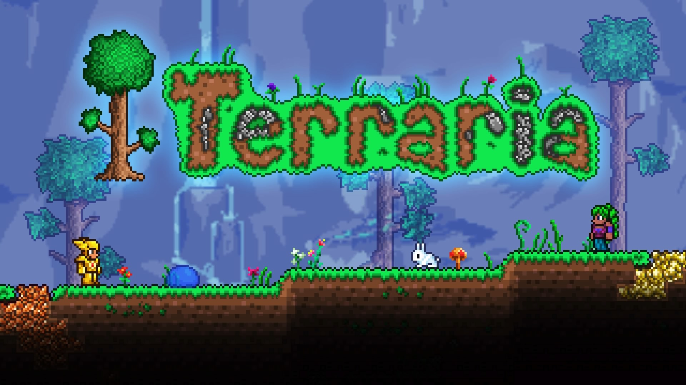

Terraria цепляет в первую очередь своими безграничными возможностями. Для игрока генерируется свой, уникальный мир, который ему предстоит изучить «от» и «до». Здесь нет чёткой сюжетной линии (только небольшие квесты), нет временных или геймплейных рамок. Игрок может делать всё, что ему заблагорассудится, в рамках внедрённых разработчиками механик. В мире Террарии есть агрессивные мобы, и столкновения с ними неизбежны, но игроку необязательно зацикливать на этом своё внимание. Среднее снаряжение поможет чувствовать себя в безопасности, а предусмотрительность и запрет ночных прогулок не дадут попасть в ловушку. Атмосферу дополняет красивый саундтрек и приятные игровые мелочи. День и ночь плавно сменяют друг друга, анимация простая, но приятная глазу. В игре использованы контрастные, в меру яркие цвета. Радует и оптимизация проекта. Террария – это игра, которая доступна практически всем геймерам. Отсутствие навороченного визуального движка существенно снижает нагрузку на ПК.